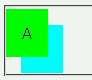
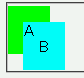

相対配置（position: relative;）したインライン要素にz-indexプロパティを指定しても反映されない。
<span style="position:relative;z-index:2;padding:1em;background:lime;"> A</span> <span style="position:relative;z-index:1;left:-2em;top:1em;padding:1em;background:aqua;"> B</span>
z-indexプロパティの指定により、'A' のspan要素を 'B' のspan要素よりも前面に配置させています。
Moz1.0.1での表示
Opera6.05での表示
Opera6.05では不具合の発生が確認されました。Opera7.0では標準・互換モードともに不具合の発生は確認されませんでした。